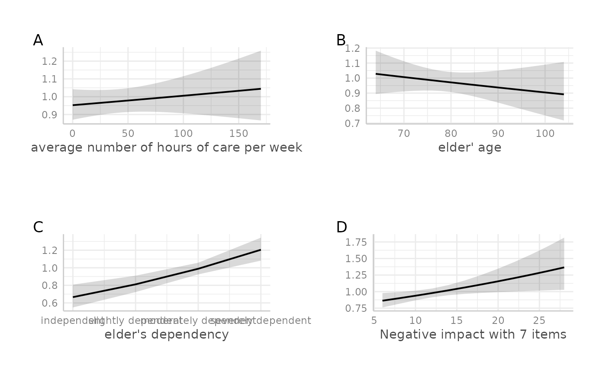

Plot multiple ggplot-objects as a grid-arranged single plot.
Usage
plot_grid(x, margin = c(1, 1, 1, 1), tags = NULL)Details
This function takes a list of ggplot-objects as argument.
Plotting functions of this package that produce multiple plot
objects (e.g., when there is an argument facet.grid) usually
return multiple plots as list (the return value is named plot.list).
To arrange these plots as grid as a single plot, use plot_grid.
Examples
if (require("dplyr") && require("gridExtra")) {
library(ggeffects)
data(efc)
# fit model
fit <- glm(
tot_sc_e ~ c12hour + e17age + e42dep + neg_c_7,
data = efc,
family = poisson
)
# plot marginal effects for each predictor, each as single plot
p1 <- ggpredict(fit, "c12hour") %>%
plot(show.y.title = FALSE, show.title = FALSE)
p2 <- ggpredict(fit, "e17age") %>%
plot(show.y.title = FALSE, show.title = FALSE)
p3 <- ggpredict(fit, "e42dep") %>%
plot(show.y.title = FALSE, show.title = FALSE)
p4 <- ggpredict(fit, "neg_c_7") %>%
plot(show.y.title = FALSE, show.title = FALSE)
# plot grid
plot_grid(list(p1, p2, p3, p4))
# plot grid
plot_grid(list(p1, p2, p3, p4), tags = TRUE)
}
#>
#> Attaching package: ‘ggeffects’
#> The following object is masked _by_ ‘.GlobalEnv’:
#>
#> efc
#> Warning: Argument `show.title` is deprecated and will be removed in the future.
#> Please use `show_title` instead.
#> Warning: Argument `show.y.title` is deprecated and will be removed in the future.
#> Please use `show_y_title` instead.
#> Warning: Argument `show.title` is deprecated and will be removed in the future.
#> Please use `show_title` instead.
#> Warning: Argument `show.y.title` is deprecated and will be removed in the future.
#> Please use `show_y_title` instead.
#> Warning: Argument `show.title` is deprecated and will be removed in the future.
#> Please use `show_title` instead.
#> Warning: Argument `show.y.title` is deprecated and will be removed in the future.
#> Please use `show_y_title` instead.
#> Warning: Argument `show.title` is deprecated and will be removed in the future.
#> Please use `show_title` instead.
#> Warning: Argument `show.y.title` is deprecated and will be removed in the future.
#> Please use `show_y_title` instead.
